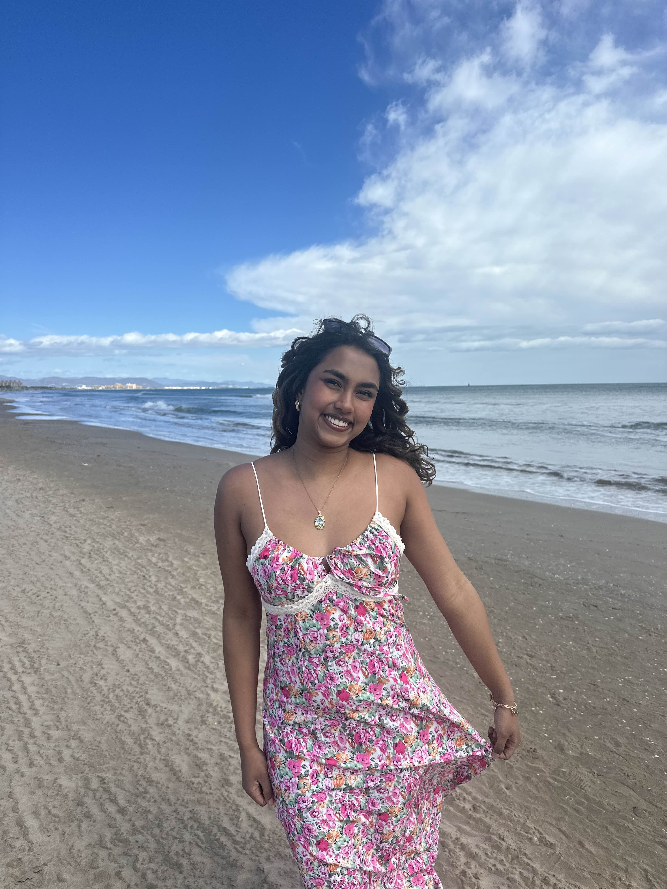

Samyu Aitha
Social Chair
“I joined WIC to connect with like-minded women in STEM and become part of a supportive community. I also wanted opportunities to grow professionally, build meaningful relationships, and learn from other women pursuing careers in technology.”